Total contingent workforce staffing and management solutions resulted in 44% reduction in turn around time.
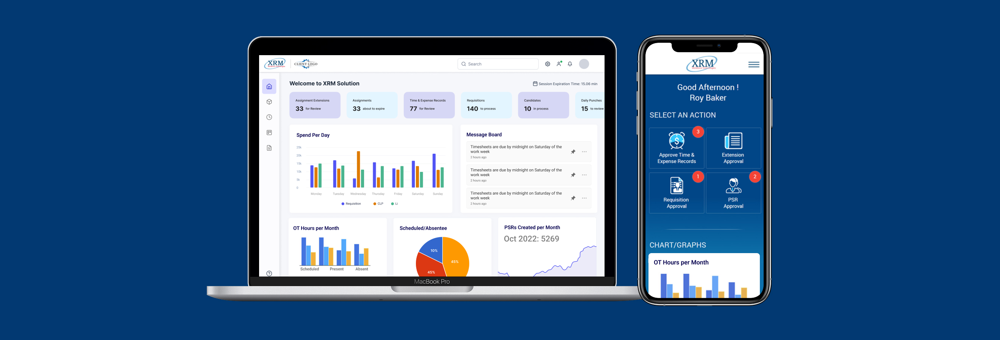
XRM is a Vendor Management System used by MSPs and enterprise organisations to manage contingent workforce workflows - including requisitions, suppliers, candidates, compliance, onboarding, and reporting.
The product was feature-rich but complex, and users struggled with usability, discoverability, and efficiency in day-to-day tasks.
Post release of app led to measurable improvements in user satisfaction and business metrics.
We started with collaborative workshops involving product, business, and engineering stakeholders to align on:
This helped surface assumptions early and ensured design decisions were grounded in both user needs and business reality.
I conducted qualitative interviews with MSP users and internal operational teams to understand:
Users didn't want fewer features - they wanted clearer guidance, better defaults, and faster paths to completion.
Based on research, I developed core personas representing the primary user groups. Each persona helped guide prioritisation and interaction decisions.
Managing multiple locations, suppliers, and compliance requirements
Less frequent user, needs clarity and confidence
Responsible for timely creation and updates to employee job records and position data
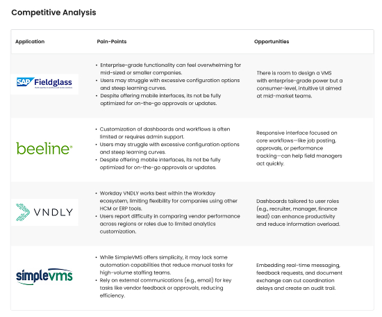
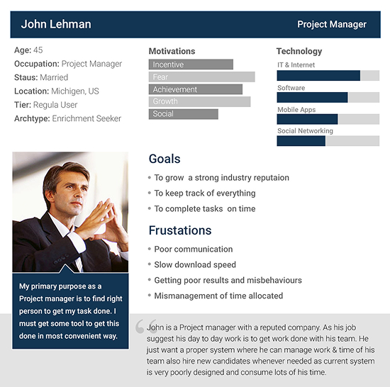
Based on the information gathered from MSP's, Admins, Approvers and stakeholders, we identified many pain-points in current system.
Slower task completion and loss of focus during multi-step workflows.
Users lacked clear feedback on task status, progress, or next steps
Few options to personalise views based on role or priorities
Lack of visual hierarchy made it hard to identify priorities
Inconsistent UI elements across modules
I mapped out end-to-end journeys for critical workflows - their pain points, motivations, and what opportunities we could tap into.
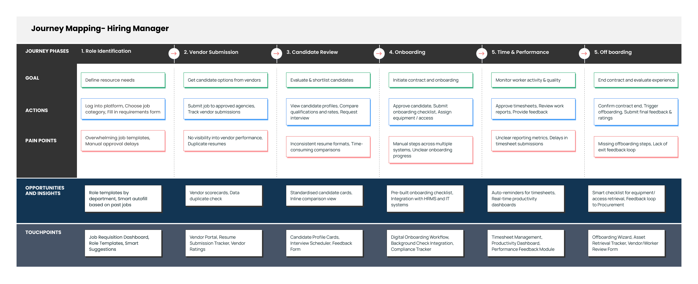
During the ideation phase, we focused on identifying the most intuitive and efficient way to present financial data and insights to users. By synthesizing user feedback and aligning with business goals, we conceptualized a modular card-based dashboard system. The goal was to reduce cognitive load, improve access to key information, and enable quick decision-making through visual clarity and interactivity.
Allowing users to customise based on relevance, with options to save preferred layouts for future sessions.
Monitor Time & Expense requests in real time.
Making report more granular so that report can be controlled at individual user level.
Able to view, add and update staff records easily.
Consistent and reusable componets to support fast comprehension and reduce fatigue.
The final visual design translated the approved wireframes into a cohesive, modern interface that balanced aesthetics with usability. The visual language focused on clarity, consistency, and accessibility, ensuring users could navigate key workflows with ease.
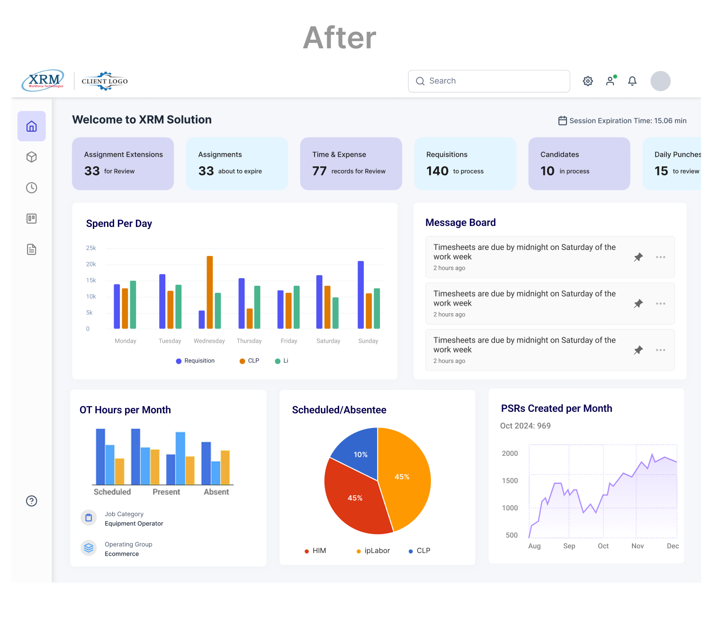
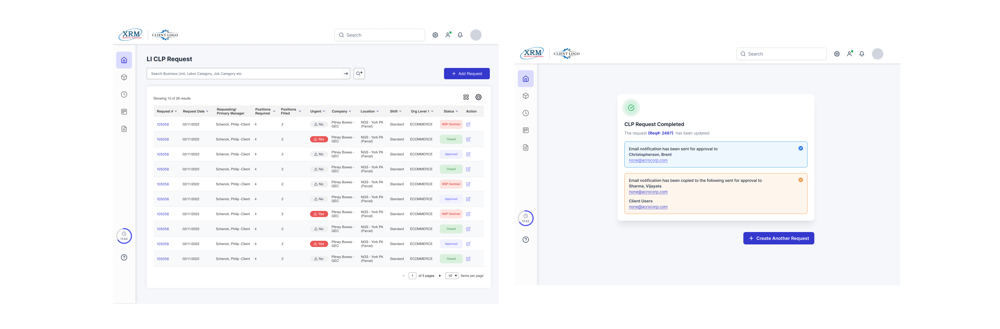
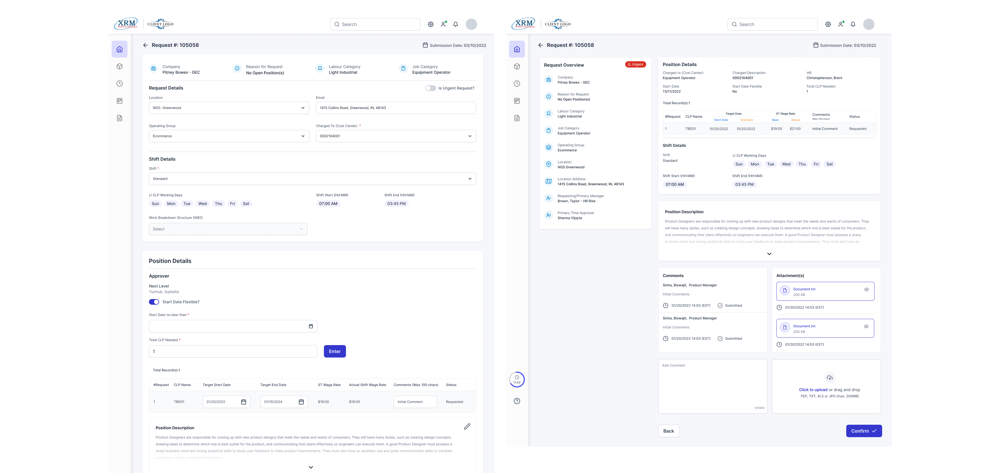
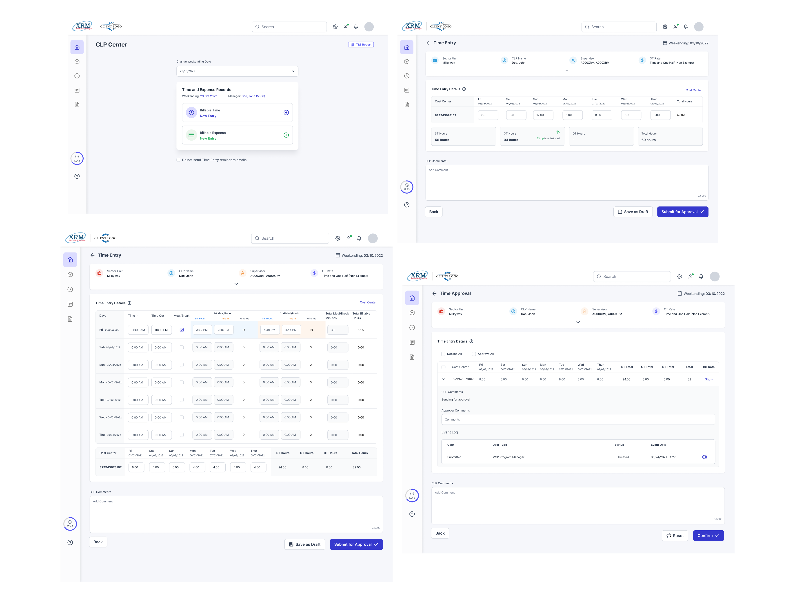
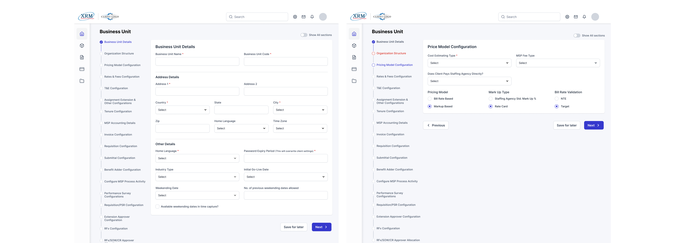
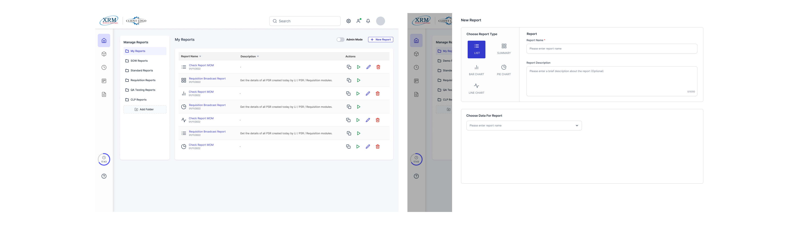
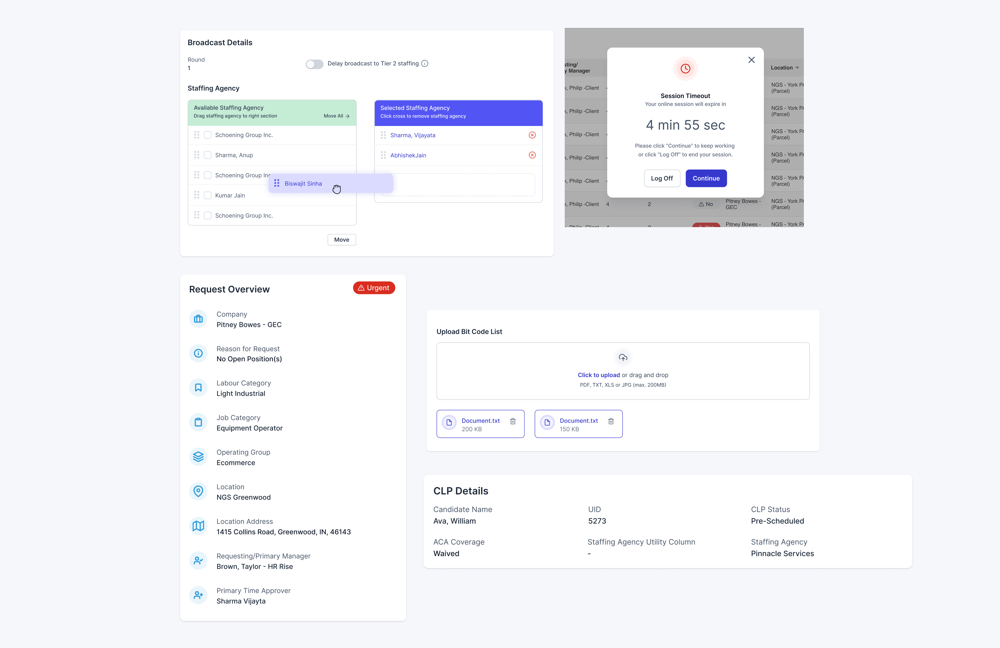
Post release of app led to measurable improvements in user satisfaction and business metrics.
I'm always interested in discussing new opportunities, collaborating on exciting projects, or simply sharing ideas about design.